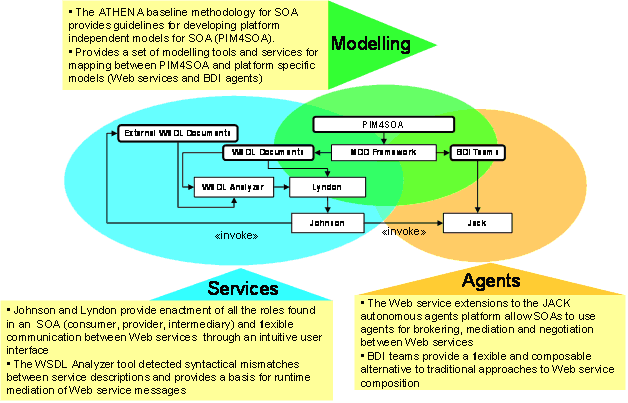
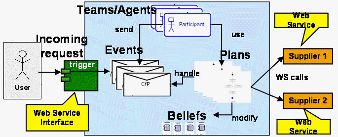
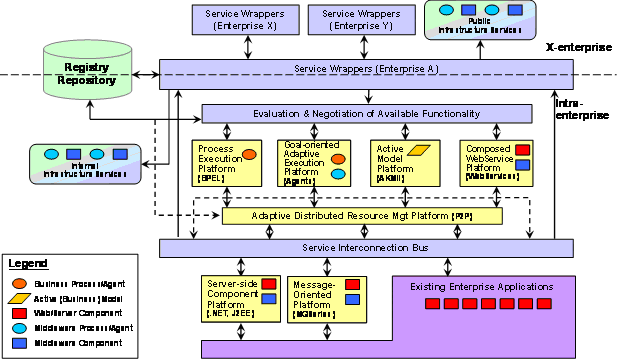

")

Flexible execution and composition of services
SOA framework
The framework for Rapid Prototyping of SOAs presented here is composed of three parts: a modelling part, a service part and an autonomous agent part.modellingserviceautonomous agent
The modelling part is concerned with applying Model-Driven Development (MDD) techniques and tools to the design of SOAs. It defines models andmodelling transformations that are specific to the concepts used for SOAs, such as Web Service descriptions and plans for autonomous agents. The service part provides a highly flexible communication platform for Web services. The autonomous agent part deals both with designing and enacting service compositions as well as performing mediation, negotiation and brokering in SOAs.serviceautonomous agent

Modelling
The ATHENA baseline methodology for SOA introduces a model-driven development (MDD) approach to specifying interoperable service-oriented architectures realized as Web services. In model-driven development are used models to describe business concerns, user requirements, activities, information structures, components and component interactions. These models govern the system development in that they can be transformed to program code. We aim to develop tools to automate model transformations for service-oriented architectures. Hence, the term model-driven development in our context encompasses both the development of models, and tools for model transformation.ATHENA baseline methodology for SOA
The models are expressed in UML, and supported by UML profiles for SOA and Web services. The baseline methodology provides guidelines for how to develop the different kinds of models recommended for SOA. Some of them lay the basis for automated code generation; all of them contribute to the understanding and specification of the system or services to be developed.
The PIM4SOA metamodel defines modelling concepts that can be used to model four different aspects or views of a SOA:
-
Service: Services are an abstraction and an encapsulation of the functionality provided by an autonomous entity.
-
Information: Information is related to the messages or structures exchanged, processed and stored by software systems and components.
-
Process: Processes describe sequencing of work in terms of actions, control flows, information flows, interactions, protocols, etc.
-
Quality of service (QoS): Extra-functional qualities that can be applied to services, information and processes.
Model transformations are developed according to the OMG Model Driven Architecture (MDA) (Soley 2000) approach between a Platform Independent Model (PIM) for SOA (PIM4SOA) and Platform Specific Models (PSMs) for describing Web services (XSD and WSDL), Jack BDI agents and BPEL (Andrews et al. 2003) processes. PIM4SOA is a visual PIM which specifies services in a technology independent manner. It represents an integrated view of the SOA in which different components can be deployed on different execution platforms. The PIM4SOA model helps us to align relevant aspects of enterprise and technical IT models, such as process, organisation and products models. This model allows us to raise the abstraction level at which we can talk about and reason on the architecture we design.
Services
The part of our SOA Rapid Prototyping framework that deals with the enactment of Web services is composed of three tools which are arranged along a value chain: the WSDL Analyser, the Lyndon tool and the Johnson tool.
-
The WSDL Analyzer is a tool for detecting similarities between Web service descriptions. The tool can be used to find a list of similar services and produces a mapping between messages, thereby enabling brokering and mediation of services. The algorithm of the WSDL Analyzer improves over an algorithm for finding structural similarities proposed by Wang and Stroulia (Wang et al. 2003) by taking into account additional features of the WSDL structure. More specifically, we make use of the tree-edit distance measure (Shasha et al. 1997) and the concept of a weak subsumption relation (Nagano et al. 2004).tree-edit distanceweak subsumption relation
-
Johnson is a runtime tool that enables users to enact most of the roles typically found in an SOA, thereby enacting complex SOA scenarios by sending real SOAP messages between Web services without having to write a single line of code. Johnson features a Web-based user interface designed to closely resemble Web-based email applications, with the only difference that SOAP messages and Web Services endpoints are used in place of email messages and email addresses. The user can see incoming SOAP messages in the Inbox and create outgoing SOAP messages in the Outbox that will be sent to external Web services. A powerful user-interface generator relieves the user from having to deal with XML documents by generating forms for displaying and editing any XML-based data type.
-
The Lyndon tool can be seen as the design-time counterpart of the Johnson tool. It analyses WSDL files and automatically configures Johnson for playing either the role of consumer or provider of the service described. Lyndon parses a WSDL file and determines which endpoints need to be created, and which processing chains need to be assigned to them. Determining which processing modules to include in the processing chain takes into account information extracted from the WSDL file as well as options set by the user. The user may, for example, specify whether Johnson should be configured as a service consumer or a service provider, or whether messages sent to or from the service should be logged. Some configuration information can be extracted from the WSDL file, such as the need for implementing the WS-Addressing specification, which is specified as part of the description of the bindings of a Web service.
Agent
The aim of the extended JACK agent framework for Web Services is to provide a goal-oriented service composition and execution module within an SOA.
Following the Belief Desire Intention (BDI) model, agents are autonomous software components that have explicit goals to achieve or events to handle (desires). Agents are programmed with a set of plans to describe how to go about achieving desires. Each plan describes how to achieve a goal under varying circumstances. Set to work, the agent pursues its given goals (desires), adopting the appropriate plans (intentions) according to its current set of data (beliefs) about the state of the world. The combination of desires and beliefs initiating context-sensitive intended behaviour is part of what characterises a BDI agent.
BDI agents exhibit reasoning behaviour under both pro-active (goal directed) and reactive (event driven) stimuli. Adaptive execution is introduced by flexible plan choice, in which the current situation in the environment is taken into account. A BDI agent has the ability to react flexibly to failure in plan execution. Agents cooperate by forming teams in order to achieve a common goal.
The JACK agent platform is not inherently ready for interaction within a Web service environment. Additional steps are necessary for enabling interactions between the agent platform and Web services, especially when the agents themselves offer services. In this case, some tools are needed for generating the server and client-side code for using JACK inside a Web server.

Figure 23: Extended JACK framework for service composition and execution
Figure 23 is an overview of the extended JACK architecture for Web service composition and plan execution, with at its core the JACK agent framework with plan library and knowledge base. Following the MDA approach, a modeller specifies at design time a set of plans (PSM level) that constitute the workflow library of the agents. Web service calls are integrated as steps into plans. Workflows are modelled graphically and most of the common workflow patterns are supported.
In order to prepare for a transformation from a PIM4SOA model to the JACK PSM, service providers are mapped to Jack agents/teams. The parts of the PIM which define the processes involved are mapped to agent/team plans and correlated events, whereas the parts which define the interfaces are mapped to the modules which provide the client- and server-side code for the JACK agent platform.
Just like BPEL, our framework supports fixed composition, where the structure and the components of the composition are statically bound, and semi-fixed compositions, where the structure is statically bound but the actual service bindings are performed at runtime. More explorative compositions, where both structure and components are created at runtime, are beyond what BPEL or BDI agents can offer.
However, there are several advantages to BDI agent, especially when it comes to handling failures at runtime. A plan is executed in a context which specifies conditions for plan instances and also other applicable plans. An exception in one plan instance then leads to the execution of another plan instance for the next known service. The BDI agent approach supports this adaptive behaviour in a natural way, whereas a BPEL process specification which attempts to provide the same behaviour would require awkward coding such as nested fault handlers.
Another advantage is that extending the behaviour by adding a new plan for a specific task simply means adding it to the plan library for it to be executed at the next opportunity. Similarly, customizing the composition is facilitated since the different plans clearly structure the alternatives of possible actions. Since the control structure is implicit, changes in a plan do not have impact on the control structure.
Integrated execution platform
Development of the integrated execution platform and corresponding infrastructure services will be one of the focus areas of action line A5 and A6. The service bus consists of three main components:
- Service wrappers will provide a standardised way of accessing and using services. A first version of the service wrapper will be based on WSDL technology.
- Evaluation & Negation of Available Functionality
- Service Interconnection Bus provides middleware services for integrating the various execution platforms.

Services can be provided for internal use to support interoperability between business units within an enterprise, and for external use to support interoperability between enterprises. In addition to the middleware services provided by the service bus, there may be a need to develop or acquire specific infrastructure services within an organisation.